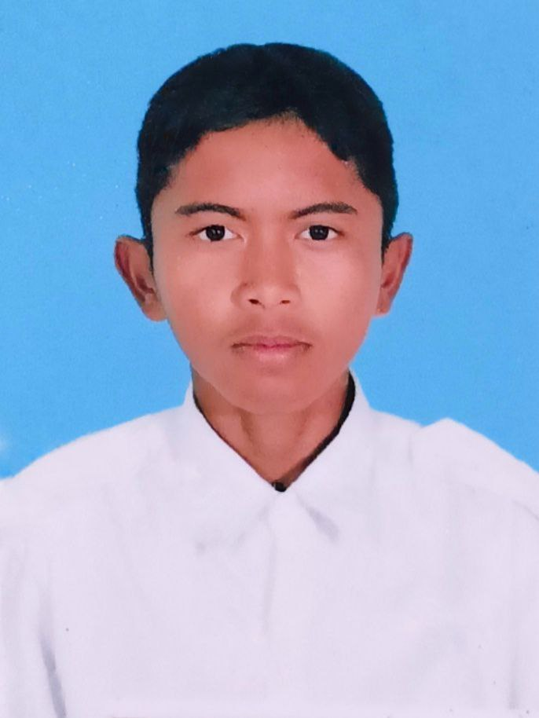
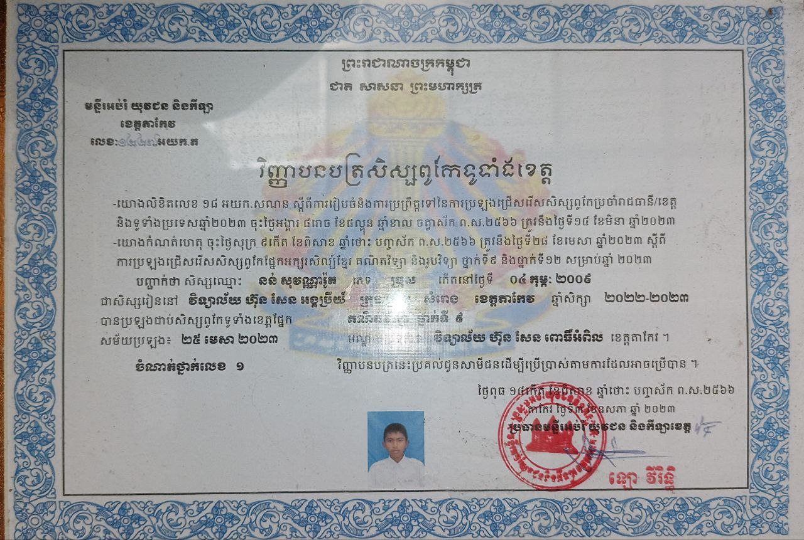
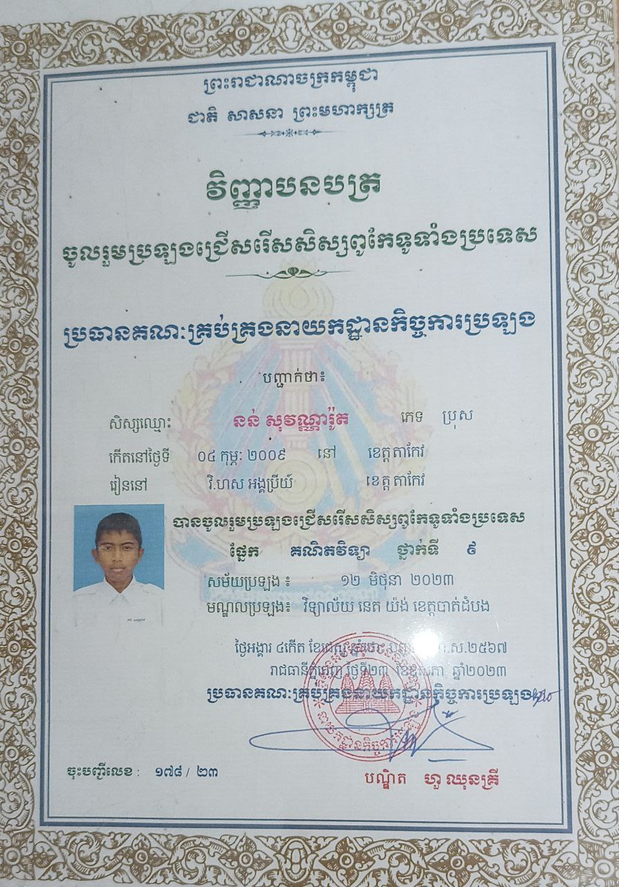

អំពីយើងខ្ញុំ

ខ្ញុំបាទ! ឈ្មោះនន់ សុវណ្ណារ៉ូត (Sovannarot Nun) ភេទប្រុស អាយុឆ្នាំ ជាសិស្សនៃវិទ្យាល័យហ៊ុនសែនអង្គប្រីយ៏។
ខ្ញុំជាកូនច្បងនៃគ្រួសារដែលមានបងប្អូន៥នាក់។
សព្វថ្ងៃខ្ញុំរស់នៅភូមិលំចង់ ឃុំលំចង់ ស្រុកសំរោង ខេត្តតាកែវ។
ខ្ញុំជាមនុស្សចង់ចេះចង់ដឹងយ៉ាងខ្លាំងនៃកុំព្យូទ័រ រូបវិទ្យា គណិតវិទ្យា
គីមីវិទ្យា និង ខ្ញុំពូកែគ្រប់មុខវិជ្ជាទាំងនោះ។
ខ្ញុំជាអតីតសិស្សពូកែម្នាក់ប្រចាំស្រុកសំរោង និងប្រចាំខេត្តតាកែវ
នៃមុខវិជ្ជាគណិតវិទ្យា ដែលទទួលបានចំណាត់ថ្នាក់លេខ១។
ការប្រលងនៅទូទាំងប្រទេសខ្ញុំធ្វើពុំសូវបានល្អក៏បានចំណាត់ថ្នាក់៣២នៃសិស្ស៨០នាក់។
ខ្ញុំតែងតែទទួលបានចំណាត់ថ្នាក់ល្អក្នុងថ្នាក់១០គ
ព្រោះខ្ញុំបានក្លាយជាសិស្សពូកែ
ហើយមានន័យថាខ្ញុំអាចរៀនចេះមុខវិជ្ជាផ្សេងៗទៀតបានយ៉ាងពូកែដោយខ្លួនឯងបាន។
ខ្ញុំជា Front-end WebProgrammer ម្នាក់ដែលចេះដូចជាHTML, CSS,JAVASCRIPT,
REACT JSជាដើម និងមានសមត្ថភាពអាចជួសជុសSoftWareនៃទូរស័ព្ទនិងកុំព្យូទ័រ។
ប្រវត្តិសិក្សា៖
នៅថ្នាក់ទី8
ការរៀនរបស់ខ្ញុំបានកើនឡើងខ្លាំងដោយទទួលបានលេខប្រចាំខែនិងប្រចាំឆ្នាំលេខ1។ទោះជាខ្ញុំទទួលបានចំណាត់ថ្នាក់លេខមួយក៏ដោយក៏នៅតែមិនគ្រប់គ្រាន់ដែរសម្រាប់គ្រូនៃវិទ្យាល័យដោយគាត់បានប្រៀបធៀបខ្ញុំទៅនឹងអ្នកដទៃទៀត
ដោយពេលនោះខ្ញុំមិនអាចប្រជែងឈ្នះគេឡើយដោយខ្ញុំខ្សោយខាងមុខវិជ្ជាភាសាខ្មែរអញ្ចឹងធ្វើឲ្យការប្រឡងតេស្តនៅពេលនោះខ្ញុំទទួលបានលេខ2។
នៅឆ្នាំបន្ទាប់ថ្នាក់ទី9
ខ្ញុំក៏ប្រឹងប្រែងពេញទំហឹងដើម្បីយកឈ្នះការប្រៀបធៀបនិងប្រឡងសិស្សពូកែនោះឲ្យបាន
ថាអាចទៅបានថាឆ្នាំនោះជាឆ្នាំល្អសម្រាប់ខ្ញុំព្រោះជាឆ្នាំសម្រាប់ការប្រឡងសិស្សពូកែថ្នាក់ទី9របស់ខ្ញុំដែលទទួលបានចំណាត់ថ្នាក់លេខ1ទាំងប្រចាំកម្រងនិងប្រចាំខេត្តនៃគណិតវិទ្យា។
ការប្រឡងទទួលបានចំណាត់ល្អទាំងនេះហើយដែលធ្វើឲ្យខ្ញុំមានការជោគជ័យលើគូរប្រកួតប្រជែង។
ពេលការប្រឡងសិស្សពូកែប្រចាំប្រទេស
ដែលនៅពេលនោះខ្ញុំធ្វើមិនបានល្អក៏ទទួលបានចំណាត់ថ្នាក់លេខ32នៃសិស្ស80នាក់ដោយមិនបានជាប់នៅក្នុងចំណាត់ថ្នាក់ល្អឡើយ។
ដល់ថ្នាក់ទី 10
គឺជាពេលសិស្សនៃអនុវិទ្យាល័យដទៃចូលមកវិទ្យាល័យអង្គប្រីយ៍ដែលជាពេលមានសិស្សពូកែដែលអាចប្រជែងទៅនឹងខ្ញុំបាននាំឱ្យខ្ញុំប្រឹងប្រែងរៀននៅឆ្នាំនេះដោយមិនទម្លាក់ដៃឡើយដោយគឺប្រឡងឲ្យបាននូវមធ្យមភាគប្រចាំខែនិងប្រចាំឆមាសខ្ពស់បំផុតប្រចាំថ្នាក់ទី១០។
បំណងប្រាថ្នាធំបំផុតរបស់ខ្ញុំគឺចង់ឱ្យអ្នកដែលជាប់ឈ្មោះក្នុងតារាងកិត្តិយសនៃថ្នាក់ទី10ទាំងអស់សុទ្ធតែជាមិត្តភក្តិខ្ញុំ។
ការរៀនរបស់ខ្ញុំពោរពេញទៅដោយការប្រៀបធៀបពីមួយទៅមួយតែការប្រៀបធៀបទាំងនោះគឺខ្ញុំពិតជាពេញចិត្តណាស់ព្រោះការប្រៀបធៀបទាំងនោះឯងជាកម្លាំងចិត្តឲ្យខ្ញុំប្រឹងប្រែងយកឈ្នះការប្រៀបធៀបនោះឲ្យបានជាដាច់ខាត។
ដោយមនុស្សខ្ញុំជាមនុស្សដែលចង់បាននូវអ្វីដោយខ្លួនឯងដោយមិនមែនជាការមកគាប់ចិត្តអ្នកដទៃឡើយគឺការរៀនឲ្យពូកែរបស់ខ្ញុំគឺជាការចង់បានដ៏ធំរបស់ខ្ញុំ
នាំឱ្យខ្ញុំខំប្រឹងរៀនដោយមិនមានភាពធុញទ្រាន់និងដោយកម្លាំងចិត្តមនសិការនាំឱ្យការរៀនមានការរីកចម្រើនធ្វើឱ្យអាចរៀនបានជាច្រើនម៉ោងក្នុងមួយថ្ងៃដោយគ្មានភាពនឿយហត់។
Adiós

